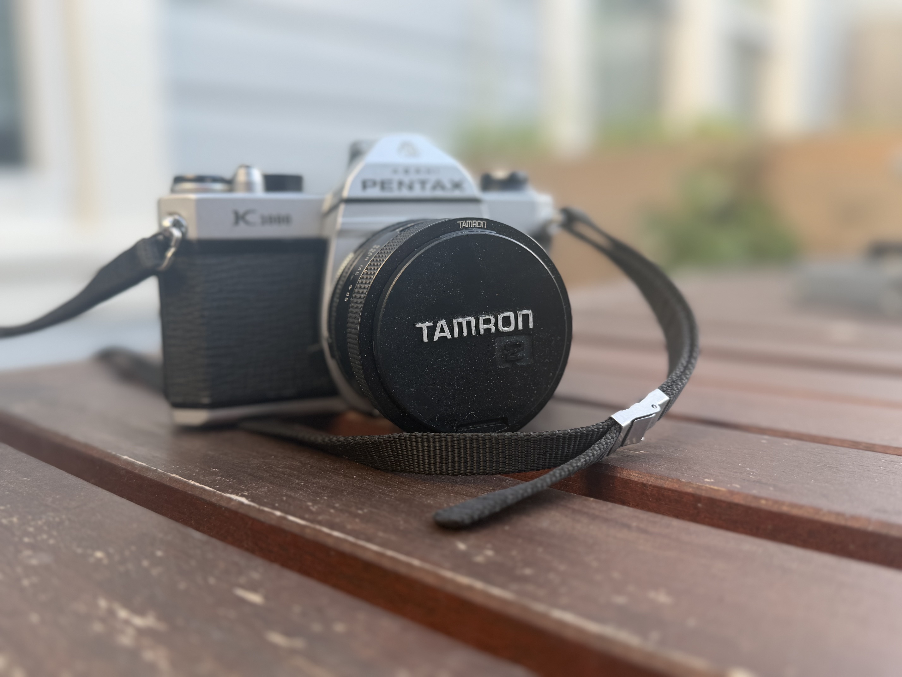
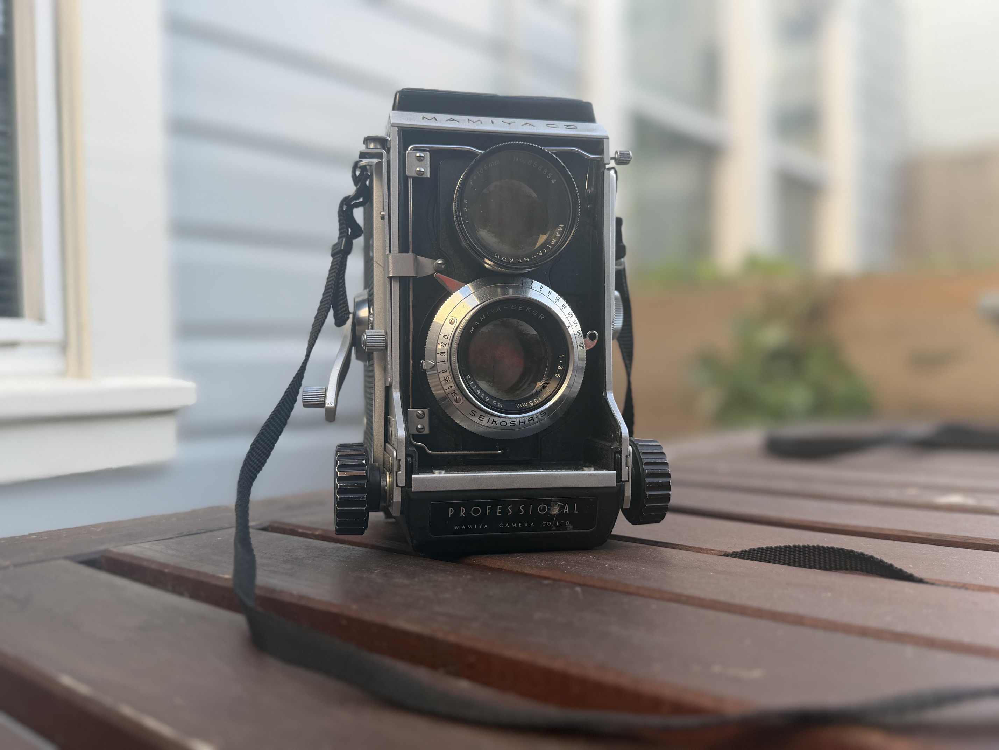
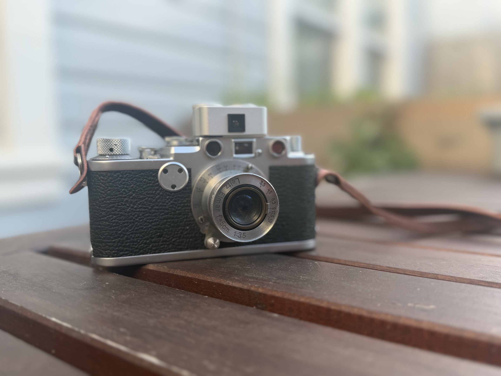

Gear
The tools behind the images
Camera Gear

Pentax K1000
35mm SLR — 1976–1997. An all-mechanical workhorse with fully manual controls. Over 3 million produced, beloved by students and professionals alike for its uncompromising simplicity.

Mamiya C3
Medium format TLR — 1962–1965. A 6×6 twin-lens reflex with interchangeable lenses and bellows focusing. One of the few TLRs ever made with swappable optics.

Leica IIIf
35mm rangefinder — 1950–1956. The iconic Barnack-style Leica with built-in flash sync. A precision German instrument that defined a generation of street and documentary photography.
Outfit Gear
Latex
- Add your latex pieces here
Leather
- Add your leather pieces here
Accessories
- Add your accessories here
Footwear
- Add your footwear here